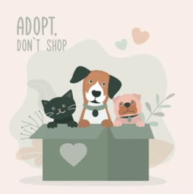

Meet Your New Best Friend

Every year, Pixel Paws welcomes hundreds of dogs and cats who are looking for a loving home. Our adoption counselors take the time to get to know each animal's personality so we can match them with the right family. Whether you're looking for an energetic puppy or a calm senior companion, we have a friend waiting for you.